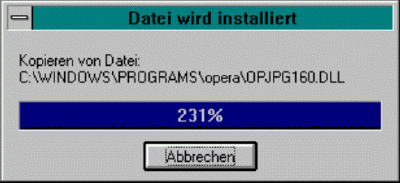
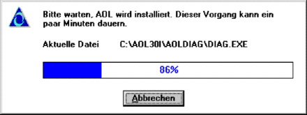

...or How a One-liner Can Bite You
Have a look at this simple function:
function MakePercentage(const Step, Max: Longint): Integer;
begin
Result := Round (Step / Max) * 100;
end;
The function has four lines, three bugs, two problems and needs one push up in self documentation.
First try to find the bug which renders the function useless.
Are you smart enough to find two problems the use of this function can cause?
Please do not read on until you've found the bug.
Not found yet? Read the Delphi help for Round().
Bug # 1
The bug should be now obvious. A pair of braces is missing.
MakePercentage(49,100) returns not 49 but 0, and MakePercentage(51,100) returns not 51 but 100.
Lesson: Testing is ALWAYS needed and real-world values are a must.
Bug # 2
The second bug is less obvious. The type of the parameters and the type of the function result do not agree. They are only compatible.
You do not call this a bug? I call it a bug because code should be as portable as possible. If this function is compiled with a Pascal compiler where the size of Longint and Integer is not the same then wrong results may occur.
The correction is to change Integer to Longint. Longint can hold bigger values than Integer and therefore broadens the useability of the function.
Lesson: Correcting a bug is not easy and needs careful decisions.
Bug # 3
Extensive testing will uncover the third bug. The function is not as accurate as expected. By dividing first and multiplying afterwards, some accuracy is lost. So reverse the operations and enhance the accuracy.
The tradeoff is small: you lose some range in return values.
Lesson: Sometimes bug fixing fixes one problem and introduces another. You will have to go for the lesser evil.
To find usage problems with the function, you will have to go beyond testing.
It is not enough to test with real world values. The initial intention for writing the function may blur your vision.
This function may have been written to drive a progress bar. So testing with MakePercentage(0,100) up to MakePercentage(100,100) is good enough to find the bug and make a progress bar work, but it won't exhibit the problems with extreme or anomalous values.

Proving the function with all possible values for the parameters cannot be achieved by testing the obvious. You will have to use your brain. Check the function with extreme values.
If Step is bigger than Max, MakePercentage will return values bigger than 100. This is ok. The function works beyond the initial intention.
Problem # 1
Try Max = 0. Hey, a "division by zero" exception occurs!
How to solve this? You can write code, but which value to return? MaxInt comes to mind.
Not a good idea! You hide a problem by using a value which is not quite right. It's only close to the correct but unrepresentable result "infinity".
The best solution is simply to document the problem.
The user of the function can then handle the problem himself by catching the exception or ensuring that he never uses Max = 0.
Good programming is not only writing good code. Good documentation is also needed.
Do I hear "but the problem is not solved" ? You are wrong. The function is now correct because correctness is always defined against a reference. The reference is the documentation.
Lesson: Documentation is an integral part of good code and cannot be omitted.
Problem # 2
The second problem arises from the type of the parameters. It's a signed type.
MakePercentage(-50,100) returns -50. What to do with that?
Instead of considering the mathematical implications, take a pragmatic approach. Does the user of the function want the sign? If the answer is "maybe", the solution is not to touch the function.
If the user wants the sign he gets it. Deleting an unwanted sign is easily achieved by applying Abs to the result.
What if you deleted the sign in the function? To restore the sign, the user will have to reimplement the function - rendering your function useless. The user may even be tempted to keep your function and write some strange code to restore the sign.
Lesson: Good programming has more to do with people than with code.
Code Cleanup -->Self-Documentation
The function is now as correct as is reasonably possible. The last change only improves readability. Replace "100" with "100.0".
Now it's easy to spot that the calculations are floating-point. Programmers keep forgetting that "/" is floating-point division.
The function is now self documenting. Reading the source helps the programmer to understand it. This is the link between good programming and Open Source.
The corrected function:
function MakePercentage(const Step, Max: Longint): Longint;
begin
Result := Round((Step * 100.0) / Max);
end;
When I sent the first version of this text to Marcel van Brakel (then Code Czar for the Jedi Code Library) as an oversized error report, I hadn't spotted the third error. Marcel found the bug in minutes.
Last lesson: Good programming cannot be done alone. Involve a friend!
If you want to understand more about the process of joint open code development and the benefits of its "many eyes", read Eric S. Raymond's famous article "The Cathedral and the Bazaar". Its a must-do, anyway.
-- R.M.

|